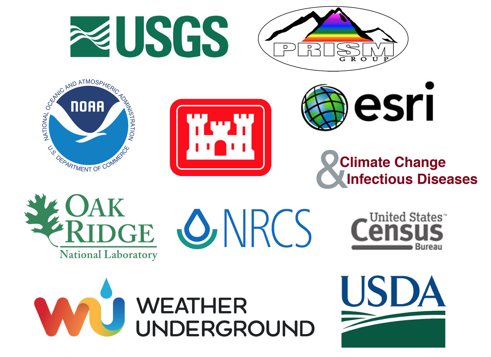

HydroData Data Repositories
HydroData offers access to 19 data sources. These can be found
- The USGS National Water Information System (NWIS) stream gages
- The USGS National Elevation Dataset (NED) elevation data at 1 and 1/3 arc-second
- The USGS National Hydrography Dataset (NHD)
- The Global Historical Climatology Network (GHCN), coordinated by National Climatic Data Center at NOAA
- The Daymet gridded estimates of daily weather parameters for North America, version 3, available from the Oak Ridge National Laboratory’s Distributed Active Archive Center (DAAC)
- The National Land Cover Database (NLCD) from 2001, 2006, and 2011
- The SNOTEL station inventory
- The US Army Corps National Dam Inventory
- The USGS reservoir dataset
- The World waterbody dataset
- The watershed boundary dataset at all levels from 2 to 12
- The global airport dataset
- The TIGER road network dataset from the Census Bueuea
- The USDA Cropland Layer Dataset from 1997:2017 when/where available
- The USGS Water Use Dataset for 2005, 2010, and 2015
- The PRISM monthly and Annual Normal Datasets from Oregon State
- Airport Data from Weather Underground
- The NOAA National Water Model Streamflow forcasts
- The Koppen Climate Classifation Dataset
- Embed maps in knitr/R Markdown documents and Shiny apps or export to browser.
